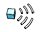
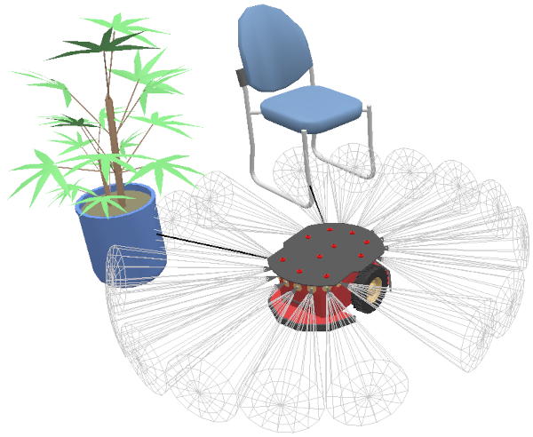

|
Proximity sensors CoppeliaSim offers a very powerful and efficient way to simulate proximity sensors: a proximity sensor is an instance of type proximitySensor, which derives from type sceneObject. It detects detectable entities. Following figures illustrates a simulation that uses proximity sensors:  [Mobile robot using proximity sensors] Proximity sensors are added to the scene with [Add > Proximity sensor]. Refer also to sim.scene:createObject and proximitySensor-related methods and properties. The proximity sensor detection routines used by the proximity sensors are also available as stand-alone routines via the Coppelia geometric routines. Refer also to proximitySensor:checkSensor. |